Filtri dello schermo e transizioni di scena senza programmare su Android
32 filtri dello schermo (TV, VHS, sott'acqua, incubo, torcia…) e 19 transizioni di scena: tutto l'esempio Filters showcase, fatto senza una sola riga di codice su un tablet Android.
Creare una visual novel senza programmare su Android
Personaggi che parlano, scelte, più finali, schermata del titolo con salvataggio, galleria e cuori d'amicizia: una storia a scelte creata con Yop2D, senza una riga di codice, su un tablet Android.
Effetti particellari senza programmare su Android
Esplosioni, fuoco, fumo, pioggia, neve, iperspazio, folgorazione, fermo immagine, flash e dissolvenza: tutti gli effetti dell'esempio Effects showcase, senza una riga di codice su un tablet Android.
Progetti ed esportazione
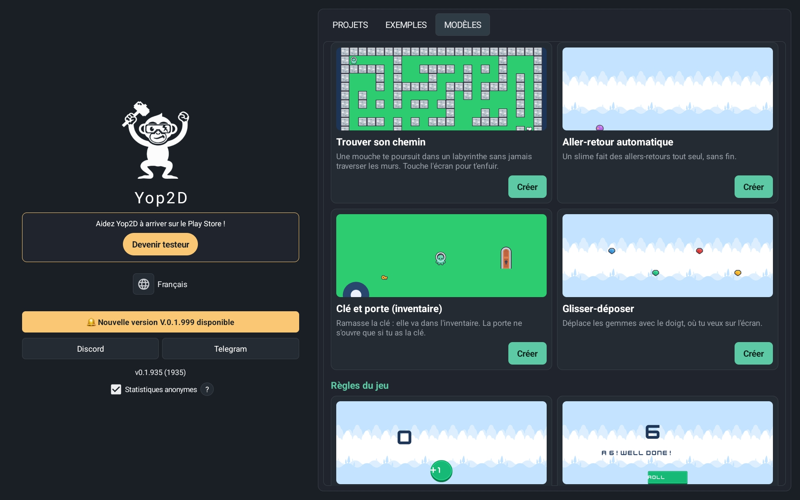
Dalla schermata iniziale ritrovi i tuoi progetti con le loro miniature e apri i giochi di esempio per imparare in fretta. Con un solo pulsante, Yop2D trasforma il tuo gioco in un file APK autonomo, direttamente sul dispositivo: senza computer, senza server, senza strumenti esterni.
50 modelli per imparare
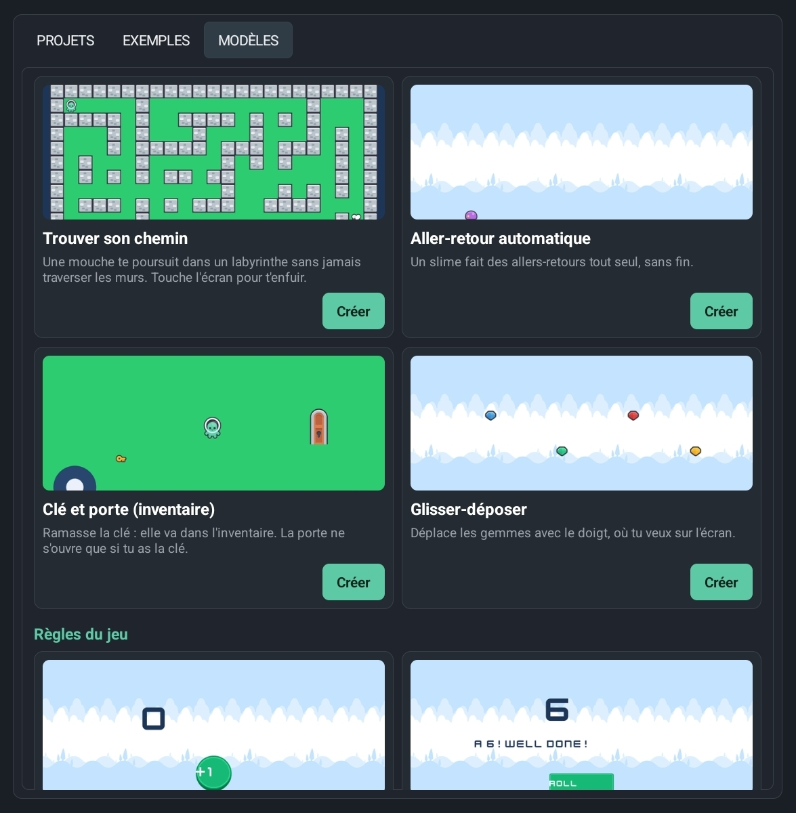
Nella scheda «Modelli», Yop2D chiede «Che gioco vuoi creare?»: 50 piccoli progetti che mostrano ognuno una sola cosa (muoversi, saltare, sparare, trovare la strada, una variabile, un HUD, una pausa, particelle…), ordinati per categoria. Ogni modello funziona subito e spiega sullo schermo quale nodo fa cosa. In cima, la guida «Il tuo primo gioco in 5 minuti» ti accompagna passo dopo passo.
Una libreria che contiene tutto
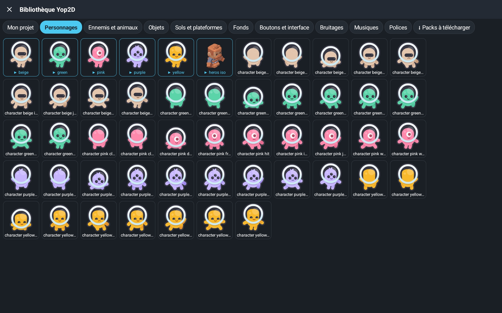
Per creare il tuo primo gioco non devi cercare nulla altrove: la libreria è già dentro Yop2D. Personaggi e nemici animati, oggetti, suoli e piattaforme, sfondi, pulsanti, effetti sonori, musiche, font e titoli già pronti: con un tocco l'immagine arriva nel tuo gioco con tutte le sue animazioni (fermo, camminata, salto…). I pacchetti online (Pirati, Spazio, Interfaccia ologramma, Effetti speciali, Aereo, Mostri, Gesti touch) si aggiungono con un solo pulsante, e tutto è liberamente utilizzabile.
Editor visivo dei livelli
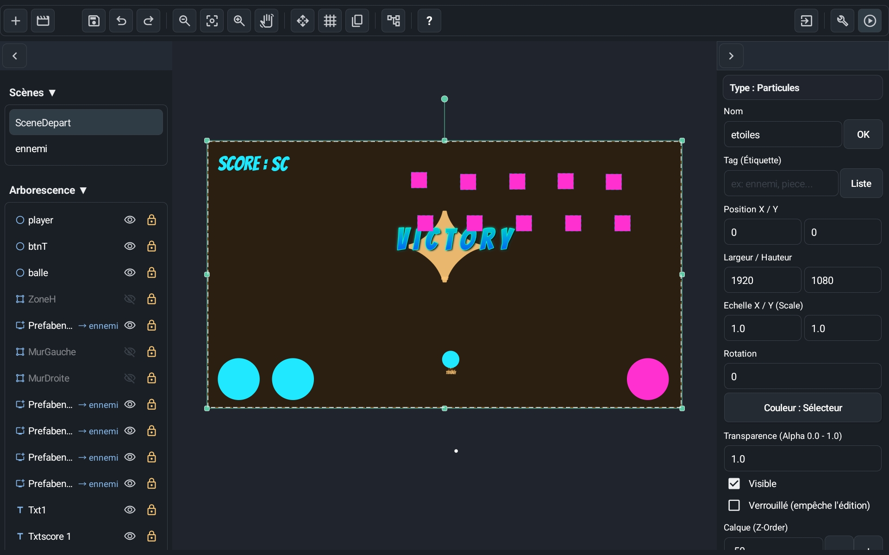
Un'interfaccia ispirata ai motori professionali, pensata per il touch. Tocca un oggetto per selezionarlo, trascina per scorrere la scena e usa le maniglie per spostarlo, ridimensionarlo o ruotarlo. Nascondi o blocca un oggetto con un tocco, così niente si sposta per sbaglio.
Livelli a tile
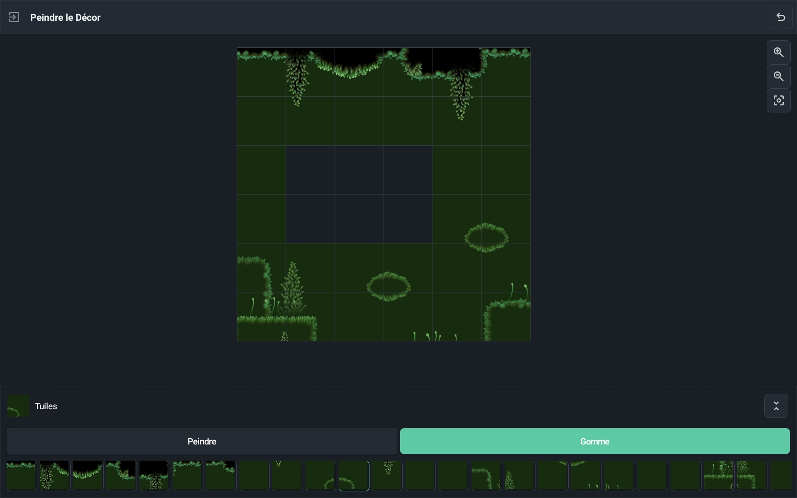
Importa un tileset, dipingi i tuoi livelli casella per casella e indica una sola volta quali caselle sono solide. Le collisioni sono gestite in automatico: platform e mappe viste dall'alto si costruiscono in fretta.
Editor di animazione in tempo reale
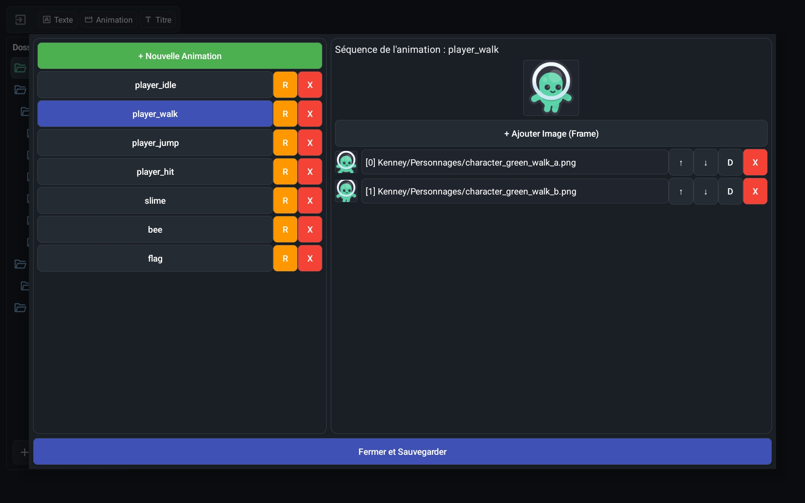
Vedi a colpo d'occhio i fotogrammi importati e guarda le tue animazioni 2D in tempo reale, dentro il motore. Nel gioco, le animazioni seguono la pausa e il rallentatore come tutto il resto.
Titoli ed effetti di testo integrati
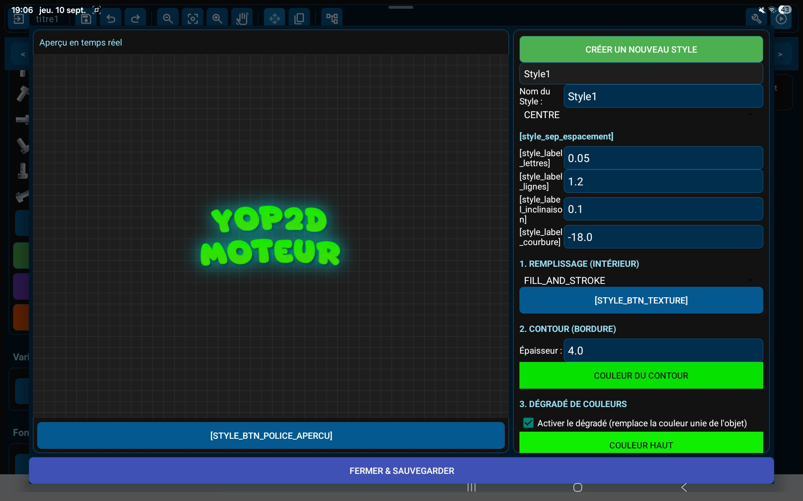
Crea titoli stilizzati (sfumature, contorni, neon, ombre, rilievo, texture, curve) direttamente nel motore, invece di produrre pesanti immagini di testo con altre app. Il tuo APK finale resta leggero.
Testi e dialoghi in più lingue
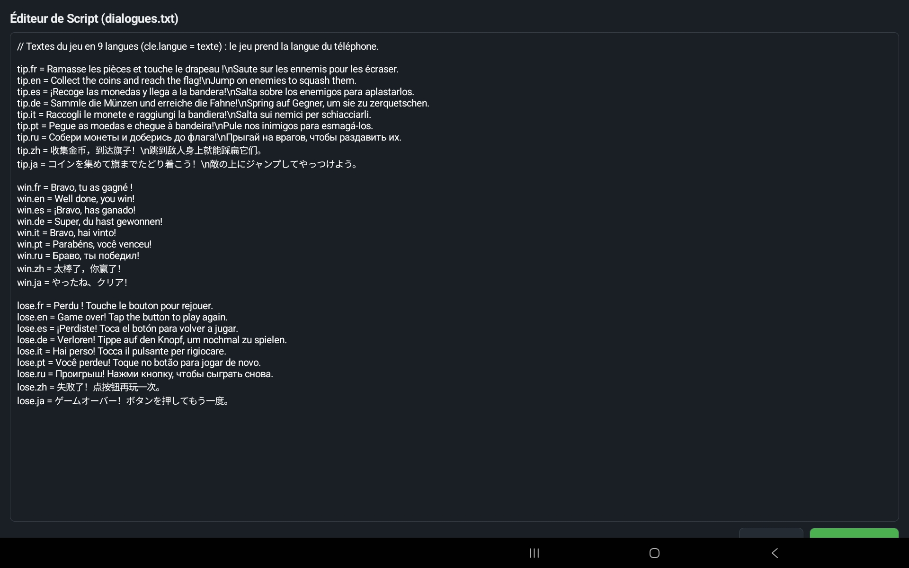
Tutti i testi del gioco sono raccolti in un unico file, modificabile direttamente in Yop2D: una riga per lingua (ciao.fr, ciao.en…). Il nodo «Mostra dialogo» sceglie da solo la lingua del telefono del giocatore: il tuo gioco parla 9 lingue senza nessun nodo in più.
Sistema di nodi visivi
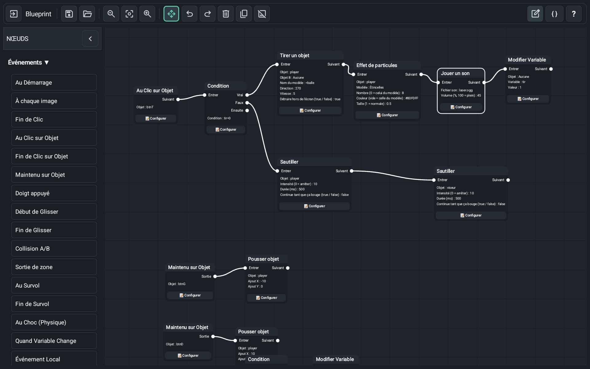
Nessun codice da scrivere: la logica del gioco si costruisce con blocchi visivi (nodi) collegati tra loro. 198 nodi pronti all'uso coprono movimento, fisica, animazioni, suoni, dialoghi, inventario, telecamera, timer e condizioni. Richiudi intere catene di nodi per tenere in ordine lo spazio di lavoro. Un pulsante riordina tutti i nodi con un solo tocco, in alberi leggibili da sinistra a destra.
Il cervello dei tuoi giochi
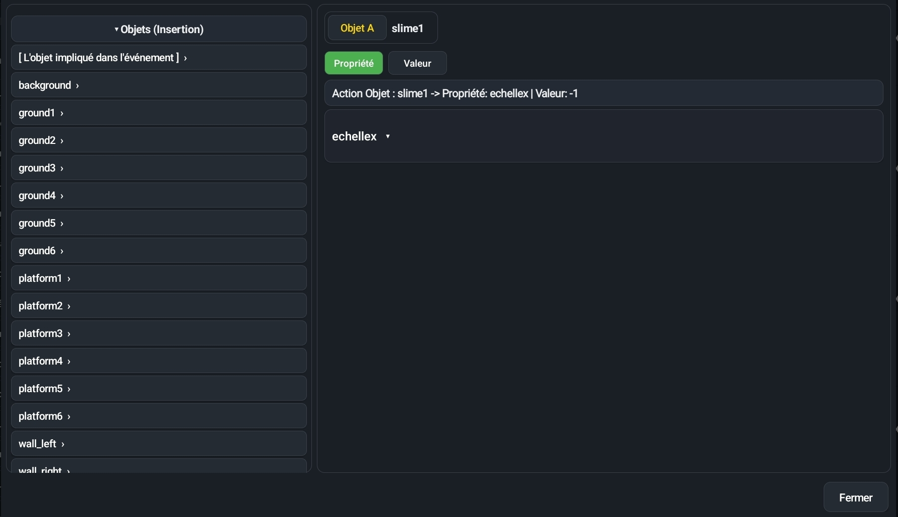
Tocca un nodo per regolarlo: la finestra mostra prima su cosa agisce (① Su cosa?), poi le sue impostazioni (②). Scegli immagini, suoni o animazioni da elenchi e rispondi «sì» o «no» con un tocco. Piccole formule come score + 1 usano le variabili, la posizione del dito, il joystick, il tempo o le proprietà degli oggetti: basta toccare un aiuto a sinistra, e una riga «In parole semplici» spiega la formula a parole.
Giochi di esempio inclusi
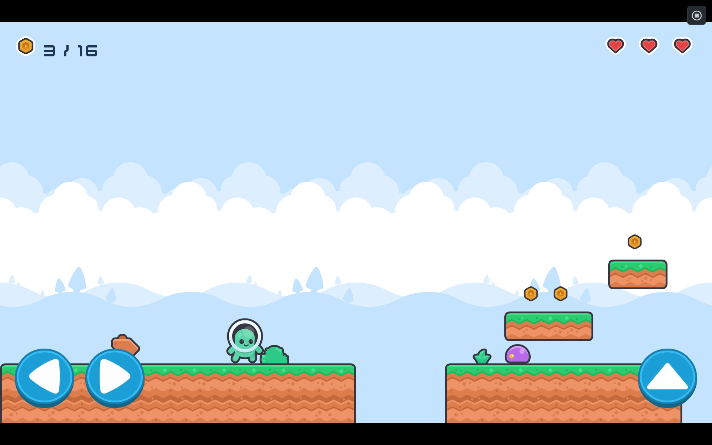
Venti giochi di esempio si scaricano dalla scheda «Esempi» del motore: Neon shooter (arcade con astronave), Neon jump (platform con telecamera che segue), Platformer (monete, nemici e 3 vite), Climb & run (un personaggio che cammina, salta, si accovaccia e sale le scale da solo), Maze chase (un labirinto dove due mosche ti inseguono), Pirate battle (una battaglia navale contro i pirati), Candy match (allinea 3 caramelle), Memory cards (trova le coppie di carte), Nexus UI (un'interfaccia futuristica: menu, opzioni, negozio), Firefly Night (una storia a scelte con 4 finali), Dungeon walk e Dungeon escape (un dungeon in vista isometrica da esplorare e poi da cui fuggire), Crypt key (un dungeon visto dall'alto: botole, punte, una guardia e una chiave), Lost on the moon (una storia a scelte in 9 lingue) e una vetrina di tutti gli effetti visivi. Aprili, giocaci, poi modificali per capire come funziona tutto. Novità: Filters showcase, 32 filtri dello schermo e 19 transizioni da provare con un solo tocco. Hana ha una domanda urgente, una commedia assurda a dialoghi con 5 finali. Ruins maze, un grande labirinto di rovine in vista isometrica da esplorare alla sola luce di una torcia. Space 1, uno sparatutto spaziale verticale disegnato come uno schizzo, con boss, missili guidati e bonus vita. Vedi tutti gli esempi →
Su tablet e telefono
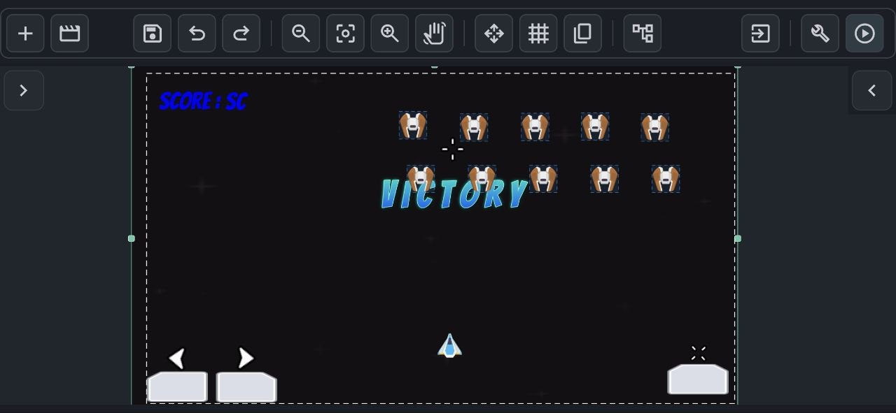
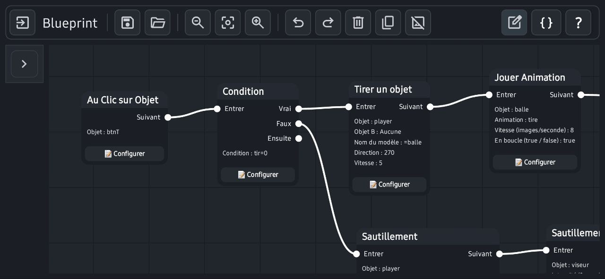
Il tablet è il più comodo, ma Yop2D funziona anche sui telefoni Android in orizzontale. Sugli schermi piccoli i pannelli passano a una disposizione compatta per lasciare più spazio possibile alla scena. La barra in alto scorre con il dito e lo zoom a due dita segue le tue dita.
Cosa sa fare il motore
Nodi visivi senza codice
198 nodi per costruire la logica del gioco collegando blocchi, con semplici formule quando servono.
50 modelli per principianti
Una scheda «Modelli» con piccoli progetti per categoria: ognuno mostra una sola cosa e spiega quale nodo fa cosa.
Giochi di dialogo (visual novel)
Storie a scelte come con Ren'Py, ma senza codice e su tablet: personaggi con emozioni che sbattono le palpebre e parlano, testo lettera per lettera, parole che tremano o ondeggiano, grandi pulsanti di scelta (a tempo o bloccati), nome del giocatore, cronologia, 9 lingue.
Una vera visual novel, completa
Schermata del titolo con «Continua», salvataggio automatico a ogni frase e 5 slot di salvataggio con foto, pulsante ◀ Indietro (anche prima di una scelta), finali da scoprire e galleria di foto ricordo, impostazioni del giocatore (velocità del testo, volumi, salta solo ciò che è già letto), cuori d'amicizia, ritratto nel riquadro del testo, frasi lette ad alta voce, scelte come grandi carte illustrate e una mappa di tutta la storia nell'editor. I pulsanti si raccolgono in un unico menu ☰.
Anima i personaggi
Un nodo «Animare un personaggio» lo fa scivolare da un posto all'altro, crescere, saltare o tremare, con la durata e lo stile che scegli (costante, morbido, rimbalzo…). Può aspettare la fine del movimento o lasciare che la storia continui.
Galleria, scene da rigiocare e musiche
La galleria della schermata del titolo ha tre schede: immagini e finali, scene da rigiocare e musiche. Segna l'inizio e la fine di una scena con «Scena da rigiocare»: il giocatore la sblocca giocando e poi la rivede quando vuole. Anche le musiche ascoltate si possono riascoltare.
Modalità romanzo
Un nodo «Modalità romanzo» fa riempire tutto lo schermo dal testo su uno sfondo oscurato: le frasi si aggiungono una sotto l'altra come in un libro e la pagina si gira da sola. Si attiva e si disattiva in qualsiasi momento, per esempio per un racconto notturno tra due dialoghi.
Atmosfere, zoom e transizioni
Un nodo per pioggia, temporale con lampi e tuoni, neve, petali, lucciole, notte, tramonto o ricordo, con i loro suoni. Zoom morbido e transizioni a cerchio, stella o tendina: per tutti i giochi.
Filtri dello schermo e transizioni
32 filtri danno un «look» a tutto il gioco con un solo nodo, «Filtro dello schermo»: TV, VHS, bianco e nero, sott'acqua, incubo, torcia, Game Boy, neon, glitch… Compaiono e spariscono dolcemente («Ferma il filtro»). 19 forme di transizione (cerchio, stella, cuore, sipario, orologio, vortice…) permettono di passare da una scena all'altra con «Cambia scena con transizione». L'esempio «Filters showcase» li mostra tutti con un tocco.
Schermo intero su ogni telefono
Basta bande nere sugli schermi allungati: in ☰ → Impostazioni del gioco, «Adatta allo schermo del giocatore» offre «Mantieni la forma», «Allunga» (gli oggetti negli angoli vanno negli angoli dello schermo) e «Riempi» (lo scenario continua ai lati, senza deformare nulla). I nuovi progetti partono con «Allunga».
Il tasto indietro del telefono
Il nodo «Tasto indietro premuto» reagisce al tasto indietro di Android: aprire un menu di pausa, tornare alla schermata precedente o chiedere «Vuoi uscire?». Senza questo nodo, il tasto indietro non fa nulla durante il gioco, per non uscire mai per errore.
Il tuo primo gioco in 5 minuti
Una guida integrata ti fa creare un vero piccolo gioco passo dopo passo: provare il gioco, aggiungere un nodo, collegarlo, regolarlo. A ogni passo il motore ti mostra dove toccare.
Il mio eroe animato e 4 missioni
Una 2ª guida integrata crea un eroe che corre e salta, con un terreno, uno sfondo e una musica. Poi 4 missioni passo dopo passo continuano nello stesso gioco: monete e un punteggio, un nemico che pattuglia, una schermata «Vittoria!» con coriandoli e suono e infine il file APK da installare sul telefono. Un fumetto mostra dove toccare, e «✨ Fallo per me» aiuta se ti blocchi.
La mia prima storia in 5 minuti
Una 4ª guida integrata ti fa scrivere una piccola storia a scelte senza importare né posizionare nulla nella scena: una frase di Hana, una domanda, due risposte, e poi si gioca. A ogni passo una cornice mostra dove toccare, anche dentro le finestre.
Impostazioni in parole semplici
La finestra di un nodo mostra prima su cosa agisce, poi le sue impostazioni. Aiuti pronti da toccare (dito e schermo, joystick, tempo, oggetti, variabili) e una riga «In parole semplici» che trasforma ogni formula in una frase. Nomi semplici ovunque: «sì / no» invece di true / false.
Esportazione APK offline
Il tuo gioco diventa una vera app Android, creata sul tablet o sul telefono stesso, anche senza internet.
Scene come oggetti (prefab)
Qualsiasi scena può essere messa come oggetto dentro un'altra: perfetto per una fila di nemici uguali o pezzi riutilizzabili.
Selezione per tag
Dai un tag agli oggetti e un solo nodo agisce su tutti insieme: muovere tutti i nemici, distruggere tutte le monete.
Comportamenti pronti all'uso
Nella finestra «⚙ Comportamento dell'oggetto», di' cos'è un oggetto: scenario, terreno, oggetto che cade, personaggio da platform (cammina, salta, scale), personaggio visto dall'alto o oggetto da trascinare col dito. Le sue animazioni (fermo, cammina, salta, arrampica) cambiano da sole in base al movimento. Gravità, rimbalzi, collisioni e «inseguire» o «fuggire» per i nemici. Un nemico può anche pattugliare da solo: va avanti e indietro e fa dietrofront sul bordo del vuoto o contro un muro.
Ricerca del percorso
Un personaggio o un nemico trova da solo il percorso più corto su una griglia, girando attorno ai muri: labirinti, dungeon, giochi di strategia.
Tile
Dipingi i livelli con un tileset e segna una volta le caselle solide: le collisioni sono automatiche.
Griglie e puzzle
Nodi per riempire una griglia, allineare 3 pezzi uguali e mescolare il tabellone: tutto per creare un gioco «allinea 3» come Candy match.
Vista isometrica
Gli oggetti passano davanti o dietro secondo la loro posizione, e il joystick segue le diagonali: perfetto per dungeon e giochi in vista di tre quarti, come Dungeon walk.
Variabili, inventario e salvataggio
Punteggio, vite, liste di inventario, e salvare o ripristinare la partita in qualsiasi momento.
Comandi touch
Joystick virtuali, pulsanti e HUD, con multitouch: muoversi e saltare nello stesso momento.
Pausa e rallentatore
Tutto il gioco segue la pausa e il rallentatore, mentre il tuo menu di pausa continua a funzionare.
Dialoghi, suono e telecamera
Dialoghi di testo, effetti sonori con regolazione del volume, musica in loop, telecamera che segue il giocatore entro i limiti del livello, tremolio della telecamera e vibrazione.
Particelle ed effetti visivi
13 modelli di particelle (esplosione, fuoco, fumo, pioggia, neve, iperspazio, onda d'urto…), scie, alone luminoso, folgorazione, fermo immagine, flash, tinta, bordi scuri e dissolvenza dello schermo.
Giochi in più lingue
Scrivi ogni dialogo in più lingue: il gioco mostra automaticamente la lingua del telefono del giocatore, o quella scelta in un menu.
Un editor semplice e comodo
Una barra degli strumenti ridotta all'essenziale (un solo pulsante + per oggetti e scene), uno stile sobrio in cui solo lo strumento attivo si illumina di blu, un selettore di colore completo, una grande finestra per scrivere i testi, animazioni scelte cartella per cartella e una modalità «solo spostare» per riordinare i nodi senza rompere i collegamenti.
Un Inspector chiaro
L'oggetto scelto appare con la sua miniatura e il suo nome, un lucchetto per bloccarlo, sezioni richiudibili, cursori per opacità e rotazione, e una catena per mantenere le proporzioni quando cambi la dimensione.
Libreria Yop2D integrata
Non serve cercare immagini altrove: circa 420 immagini divise per tema (personaggi, nemici, oggetti, suoli, sfondi, pulsanti), molte animate («Con le sue animazioni» imposta tutto), effetti sonori e musiche, 10 font e titoli già pronti. La scheda «Pacchetti da scaricare» aggiunge pacchetti online (Pirati, Spazio, Interfaccia ologramma, Effetti speciali, Aereo, Mostri, Gesti touch).
Oggetti già pronti da scaricare
Una scheda «Prefab da scaricare» nella Libreria offre oggetti che hanno già il loro comportamento: pulsanti animati (una stella che gira, un ninja pixel che passeggia sul pulsante, neon che pulsa, vetro lucido, un pulsante tondo con ▶…), gratuiti e liberi da diritti (CC0). Ne spunti diversi, li scarichi in un colpo, poi «Aggiungi alla scena»: immagini, font e nodi arrivano insieme e ogni copia reagisce per conto suo. Tutto resta modificabile e puoi importare i tuoi prefab in .zip. Ogni prefab aggiunto diventa la sua scena: toccala nell'elenco delle Scene (messa sotto la scena che la usa) per cambiare immagine, colore, testo o nodi, e tutte le copie la seguono. Ci sono anche elementi di interfaccia: interruttore ON/OFF, barra della vita animata, punteggio che salta e finestra di pausa.
Uno stile di dialogo a tuo gusto
Lo stile dei dialoghi si regola senza codice: colori, trasparenza, forma, cornici-immagine che non si deformano, contorno del testo, una finestra completamente personalizzabile in cui il giocatore scrive il suo nome, il busto del personaggio a cavallo del riquadro (a sinistra o a destra) e una messa in evidenza dolce di chi parla (sale, gli altri scendono). Ogni impostazione è separata: puoi tenerne una senza l'altra, per esempio senza luce soffusa.
Scopri l'editor
Una 3ª guida integrata spiega l'interfaccia: scegliere e spostare un oggetto, ingrandirlo e ruotarlo, bloccarlo, annullare, spostare la vista e fare zoom. Una scheda indica dove toccare e diventa quasi trasparente quando tocchi la scena.
Scegli la tua lingua
Al primo avvio una finestra propone le 9 lingue, con quella del telefono già selezionata. Tutti i testi del motore sono tradotti, compresi i messaggi di errore e l'esportazione dell'APK.
Oggetti ordinati in cartelle
Nell'elenco degli oggetti della scena crea cartelle e sottocartelle e trascinaci i tuoi oggetti con il dito. Gli elenchi di scelta (bersaglio di un nodo, variabili, genitore) seguono questo ordine, insieme a tag e tipi di oggetto: basta elenchi infiniti.
Pixel art nitida
Un'opzione delle impostazioni del gioco mantiene i pixel ben nitidi quando si ingrandiscono immagini in pixel art. I pacchetti Preistoria e Ninja della libreria sono fatti apposta.
Giochi in verticale
Scegli orizzontale o verticale quando crei il gioco (o in ☰ → Impostazioni del gioco): sparatutto verticali, giochi di carte, puzzle. Il pulsante ▶ raddrizza lo schermo da solo e il gioco esportato resta verticale.
Missili guidati ed esplosioni
Un nodo lancia un missile che parte in una direzione e poi gira piano piano verso il bersaglio, come in un vero arcade. Se non colpisce nulla, esplode alla fine della sua durata. Un altro nodo distrugge un oggetto dopo un ritardo, utile per le esplosioni.
Dialoghi completamente personalizzabili
Per i giochi di dialogo: colori, trasparenza, forma e contorno del testo, cornici a immagine che non si deformano, pulsanti di risposta, schermata del titolo, la finestra in cui il giocatore scrive il nome, durata e stile di arrivo dei personaggi, un ritratto che esce dal riquadro ed evidenziazione di chi parla. Ogni impostazione ha un'anteprima.
Contatore FPS e tempo
Due valori da usare in qualsiasi formula: «fps» (fotogrammi al secondo realmente mostrati) e «delta» (tempo dall'ultimo fotogramma, in secondi). Un testo con ="FPS: " + fps basta per mostrare un contatore.
L'icona del tuo gioco
Scegli l'icona del gioco esportato: un'immagine qualsiasi, con zoom e posizione regolati su un'anteprima quadrata. Sulla schermata iniziale del telefono il tuo gioco mantiene la sua icona al posto del logo di Yop2D.
Giochi nella lingua del giocatore
In un gioco esportato come APK, pulsanti, impostazioni e schermata del titolo seguono la variabile «lingua» del gioco, altrimenti la lingua del telefono: un giocatore russo vede il russo, uno giapponese il giapponese.
Un editor di tessere fatto per le dita
L'immagine intera del set di tessere con la sua griglia, la dimensione della casella indovinata per te, blocchi di più tessere come timbro e pizzico per lo zoom. Pennello, gomma, rettangolo, riempi, contagocce, tessera casuale e ripeti; le tessere solide si segnano direttamente sull'immagine.
Pulsanti e schermate di dialogo nei tuoi colori
Pulsanti tondi con icone (indietro, cronologia, auto, salta, salva, impostazioni) con dimensione, colori e immagine della cornice a scelta; schermate di salvataggio, impostazioni e galleria personalizzabili; un pulsante per tornare alla schermata del titolo dalle impostazioni.
Importa i tuoi MP3, Yop2D li converte
Un MP3 importato viene convertito automaticamente in OGG (Android 10 e successivi): la musica si ripete senza interruzioni su tutti i telefoni.
Salvataggio automatico
Mai più dimenticare il pulsante 💾: il progetto e il Blueprint si salvano da soli a intervalli regolari (30 s, 1 min o 5 min a scelta), quando esci dal Blueprint, cambi app e subito prima di ▶. Durante il gioco non si salva nulla.
Cambiare scena senza uscire dal Blueprint
Un pulsante con il nome della scena in alto nel Blueprint apre l'elenco delle scene: sceglietene una, il Blueprint corrente viene salvato e quello dell'altra scena si apre subito. Comodo per copiare nodi da una scena all'altra.
Un'area della camera ben visibile
Scegli il colore del riquadro della camera (rosso, giallo, verde, ciano, bianco, nero…) e il tratto (tratteggiato, continuo o spesso): resta visibile su qualsiasi sfondo.
Zone libere: muri e recinti
Disegna una zona con quanti punti vuoi e decidi se nessuno può entrarvi (un muro) o nessuno può uscirne (un recinto). Ideale per labirinti, arene e stanze. Un modello lo spiega a colpo d'occhio.
Crea la tua musica
Uno strumento «Musica» nella finestra degli Assets: posa blocchi pronti (calmo, azione, mistero, allegro, dungeon, pirata, triste) su 4 tracce — melodia, accordi, basso, batteria — con strumenti veri (pianoforte, archi morbidi, basso, batteria, liberi da diritti). Puoi costruire i tuoi blocchi in un editor di note, chiedere «Dammi un'idea», ascoltare in ripetizione senza tagli e creare un file .ogg salvato nella cartella Suoni che preferisci, suonato poi da un nodo normale. Richiede Android 10 o più recente.
Controlla il mio gioco
Un pulsante che esamina il tuo gioco e ti dice con parole semplici cosa non va: una variabile o un oggetto mancante, un nodo collegato a niente, un'impostazione obbligatoria vuota, un file mancante. Un tocco ti porta nel punto da correggere.
Opzioni del gioco esportato
Creando l'APK: icona, numero di versione, immagine di avvio con dissolvenza, schermo sempre acceso, vibrazioni consentite o no. Una nuova versione si installa sopra la vecchia, senza disinstallare.
Conversazioni via SMS
Una modalità «SMS» per le storie: le frasi diventano fumetti su un telefono, con i tre puntini «…» prima di ogni messaggio ricevuto. Il giocatore risponde toccando una scelta e la sua risposta arriva a destra. Colori, dimensione, telefono a schermo intero: tutto si regola nello Stile dei dialoghi.
Obiettivi da sbloccare
Un nodo «Sbloccare un obiettivo»: un banner «Obiettivo sbloccato!» scivola in alto sullo schermo e l'elenco degli obiettivi (nascosti finché non sono conquistati, con un indizio se vuoi) si riempie in «Finali e galleria». Colori, immagine della cornice, durata, posizione e suono si regolano.
Testo in grassetto e corsivo
Nelle frasi di un dialogo: [b]grassetto[/b] e [i]corsivo[/i], con due pulsanti nell'editor delle frasi, oltre a colore, tremore, onda e pausa.
Crea i tuoi effetti sonori
Un editor di effetti negli Assets: suoni retrò regolabili (laser, salto, moneta, esplosione…) con la forma d'onda disegnata, e 435 suoni realistici da scaricare (passi, impatti, interfaccia, voci) da regolare con semplici cursori. Tutto viene salvato come .ogg nel progetto.
Una schermata iniziale per il tuo gioco
Negli Assets, un editor «Avvio»: immagine di sfondo, logo, titolo stilizzato, testo, animazione di entrata e di uscita, filtro e suono. Parte prima del gioco esportato e si può saltare con un tocco.
Sfondi che si muovono (parallasse)
Nei giochi di dialogo lo sfondo può zoomare o scorrere lentamente, con uno strato intermedio e un primo piano che si muovono a velocità diverse: profondità senza una riga di codice.
Movimenti a tappe
Scegli un oggetto, mettilo alla tappa 1, poi spostalo, ruotalo o ingrandiscilo alla tappa 2, 3… Yop2D calcola ciò che sta in mezzo. Riproduci il movimento con un nodo o fai attraversare lo sfondo di una storia a un'immagine (uccello, nuvola, zanzara).
Ascensori e piattaforme mobili
In ⚙ Comportamento: «Ascensore» (direzione, distanza, pausa, partenza quando ci si sale). Porta ciò che c'è sopra, spinge o schiaccia (ricomincia la scena, togli una vita). L'evento «Se oggetto tocca Tag» sa anche da che lato viene toccato.
Tagliare un foglio di immagini
Un pulsante «Foglio» negli Assets: indica quante colonne e righe, Yop2D taglia l'immagine e crea le animazioni, una per riga o scegliendo le immagini a mano (anche se un'animazione occupa più righe). I nomi proposti sono riconosciuti dai comportamenti.
Tenere il punteggio e la partita
Due nodi, «Salva le variabili» e «Carica le variabili»: il punteggio, le vite o un inventario si ritrovano quando il giocatore chiude e riapre il gioco. Un modello pronto mostra come fare.
Giochi tattici su griglia
Turni, caselle blu raggiungibili con costo del terreno, zona d'attacco, schede unità, vita, danni, percorso fino a una casella: i nodi per un gioco in stile Advance Wars o un gioco da tavolo. Un breve esempio (Tactics tutorial) spiega ogni passo con riquadri e note, con una guida passo passo.
🏫 A scuola e per i bambini
Yop2D è pensato per imparare creando. I bambini possono usarlo da circa 8 anni con un adulto (genitore o insegnante), e da soli dagli 11-12 anni. In classe, ogni alunno crea il proprio gioco su un semplice tablet.
🔒 Nessun dato personale
Niente account, niente e-mail, niente pubblicità, niente da comprare. Le statistiche sono anonime e si disattivano con un tocco.
📶 Funziona senza internet
Una volta installato, Yop2D funziona offline: comodo in un'aula senza Wi-Fi.
📱 Sui tablet della scuola
Android 7 o più recente, anche su dispositivi economici. Nessun computer necessario.
🌍 9 lingue
L'interfaccia e i giochi esistono in 9 lingue: ideale anche per una lezione di lingua straniera.
🧭 Si impara passo dopo passo
«Il tuo primo gioco in 5 minuti», 50 modelli che mostrano ciascuno una sola cosa, missioni guidate e impostazioni spiegate «in chiaro».
🎓 Modalità scuola
Un'interfaccia ancora più semplice, senza contenuti violenti (esplosioni, armi) e senza link ai social network, protetta da un codice dell'insegnante.
Come funziona la modalità scuola?
- Nella schermata iniziale, tocca il pulsante 🎓 accanto a «Lingua», attiva «Modalità scuola» e scegli cosa cambia.
- Contenuti delicati: esplosioni, armi e spari spariscono dalla libreria, come gli esempi e i modelli di combattimento e il nodo «Spara un oggetto».
- Interfaccia semplificata: solo una cinquantina di nodi di base (muovere, saltare, variabili, testi, suoni, condizioni, scene…) e nessuno strumento avanzato.
- Senza link esterni: niente Discord, niente Telegram, niente pacchetti da scaricare.
- L'insegnante sceglie un codice di 4 cifre: viene chiesto per cambiare o togliere la modalità scuola. Dopo un errore bisogna aspettare 30 secondi. Il codice resta sul tablet, non viene inviato nulla.
I progetti già iniziati continuano a funzionare: la modalità scuola cambia solo ciò che viene proposto.
È un insegnante? Costruiamo Yop2D insieme
Un quiz sulla lezione del giorno, una storia interattiva, un gioco di vocabolario in inglese… Ci dica di cosa ha bisogno la sua classe: possiamo preparare modelli per le sue lezioni, aggiungere una lingua o una funzione e rispondere alle sue domande. Yop2D è fatto da uno sviluppatore indipendente che legge ogni messaggio.
💬 Discord : zinzin0000 · Yop2D Discord
Guide per principianti
Risposte passo passo alle domande più frequenti dei principianti, scritte con i veri nodi del motore. Puoi leggerle anche dentro Yop2D, nell'aiuto dell'editor dei nodi.
Far saltare un personaggio
Gravità, pavimento solido e pulsante di salto, senza saltare a mezz'aria.
I comportamenti
Camminare, saltare, arrampicarsi, vista dall'alto e animazioni, senza nessun nodo.
Raccogliere monete e contare i punti
Un tag, una variabile per i punti e un testo che li mostra.
Perdere vita e Game Over
Una variabile vita, una barra della vita e ritorno all'inizio quando la vita arriva a 0.
Fare un rompimattoni
Racchetta con il dito, palla che rimbalza, mattoni da rompere, punteggio e vite.
Fare un gioco tattico
Turni, caselle blu, terreni, movimento e attacco su una griglia.
Passare al livello successivo
Una scena per livello, una zona di arrivo e un punteggio che continua.
Particelle ed effetti
Un'esplosione quando tocchi un nemico, una scia dietro l'astronave, un flash e una dissolvenza dello schermo.
Storia a scelte (visual novel)
Un personaggio che parla, una domanda, più finali, una schermata del titolo con «Continua» e cuori d'amicizia.
Un oggetto già pronto
Scarica un pulsante animato, mettilo nella tua scena e personalizzalo.
Crea la tua musica
Impila blocchi pronti su 4 tracce e ottieni una musica per il tuo gioco.
La schermata iniziale in immagini
I progetti, le schede, la barra degli strumenti e i pulsanti in basso, spiegati.
L'editor in immagini
Dov'è lo 0/0, ogni pulsante della barra in alto, il pannello di sinistra e l'Ispettore, spiegati.
La finestra Assets in immagini
Le cartelle, i file e tutti gli strumenti della riga in alto, spiegati.
La Libreria in immagini
I temi, i pack installati, i download e le schede, spiegati.
Il comportamento di un oggetto in immagini
Come si muove un oggetto, le sue impostazioni, le sue animazioni e la sua zona di contatto, spiegati.
L'editor di movimento in immagini
Le tappe, la durata, l'andamento e i pulsanti in alto, spiegati.
Il Blueprint in immagini
Ogni pulsante della barra in alto e ogni parte della schermata dei nodi, spiegati.
Riferimento dei nodi
Tutti i 198 nodi di Yop2D in una sola pagina: cosa fa ogni nodo, le sue impostazioni, le sue uscite e un esempio. I nomi sono esattamente quelli dell'editor dei nodi.
Yop2D a confronto con altri motori
Esistono ottimi motori di gioco. Ecco un confronto onesto per aiutarti a scegliere, compreso ciò che Yop2D non fa.
| Motore | Dove si crea | Come si programma | 2D / 3D | Prezzo | Il gioco funziona su |
|---|---|---|---|---|---|
| Yop2D | App Android (tablet, telefono), offline | Nodi visivi, senza codice | 2D | Gratis, senza pubblicità; vendi i tuoi giochi liberamente | Android (APK creato sul dispositivo) |
| GDevelop | Computer, browser web, app mobile | Eventi, senza codice (JavaScript facoltativo) | 2D e 3D | Gratuito e open source; piani a pagamento per più servizi online | Android, iOS, web, computer (versioni mobili create online) |
| Construct 3 | Browser web (anche su tablet) | Fogli di eventi, senza codice (JavaScript facoltativo) | Soprattutto 2D | Abbonamento a pagamento; versione gratuita limitata | Android, iOS, web, computer (versioni mobili create online) |
| Godot | Computer, browser web, editor Android | Codice (GDScript, C#) | 2D e 3D | Gratuito e open source | Android, iOS, web, computer |
| Ren'Py | Computer (Windows, macOS, Linux) | Script semplice (linguaggio Ren'Py, Python facoltativo) | 2D, specializzato nelle visual novel | Gratuito e open source | Computer, Android, iOS, web (versioni mobili create sul computer) |
Riepilogo semplificato, ottobre 2026. I motori cambiano in fretta: controlla i dettagli sul sito di ciascuno.
Yop2D fa per te se…
- hai solo un tablet o un telefono Android, senza computer;
- vuoi creare ovunque, anche senza internet;
- non vuoi imparare un linguaggio di programmazione;
- vuoi uno strumento gratuito, senza pubblicità, senza abbonamento e senza filigrana nei tuoi giochi;
- vuoi scrivere una storia a scelte (visual novel) senza imparare uno script, e magari mescolarla con un vero gioco (enigmi, piattaforme, combattimenti);
- vuoi condividere i tuoi giochi come app Android con familiari o studenti, oppure pubblicarli su itch.io e altre piattaforme che accettano APK, gratis o in vendita.
Cosa Yop2D non fa (ancora)
- I tuoi giochi funzionano solo su Android: nessuna versione per iPhone, web o computer.
- Non c'è ancora l'esportazione AAB, il formato richiesto per pubblicare su Google Play. È prevista in una versione futura.
- Solo 2D.
- La comunità e il numero di tutorial stanno ancora crescendo e qualche bug è possibile: le correzioni arrivano in fretta, spesso in pochi giorni.
- Nessun linguaggio di scripting per programmatori esperti: tutto si fa con i nodi.
- Il motore è gratuito, ma il suo codice sorgente non è pubblico.
Quando un altro motore è la scelta migliore
- Ti servono versioni del gioco per iPhone, web o computer: GDevelop, Construct o Godot.
- Vuoi imparare a programmare davvero o fare giochi 3D: Godot.
- Lavori al computer e vuoi un motore senza codice con una grande comunità: GDevelop o Construct.
- Scrivi una lunga visual novel al computer e vuoi lo strumento di riferimento, molto completo e con una grande comunità: Ren'Py.
Domande frequenti
Che cos'è Yop2D?
Yop2D è un motore di gioco 2D gratuito e senza codice per Android. Permette a chiunque di creare un videogioco completo su tablet o telefono con nodi visivi, senza saper programmare, e di esportarlo come APK direttamente sul dispositivo.
Yop2D è davvero gratuito? C'è pubblicità?
Sì, Yop2D è gratuito al 100%: nessun abbonamento, nessun acquisto in-app, nessun costo nascosto. In Yop2D non c'è pubblicità e non ci sarà mai.
A chi appartengono i giochi che creo? Posso venderli?
I tuoi giochi sono tuoi. Puoi tenerli, regalarli, condividerli o venderli, senza chiedere il permesso e senza pagare nulla a Yop2D.
Si può fare una visual novel, come con Ren'Py?
Sì. Yop2D ha nodi pensati per i giochi di dialogo: «Dire una frase» (personaggio, emozione, testo lettera per lettera), «Proporre una scelta» (un'uscita per risposta, timer, risposte bloccate), «Cambiare lo sfondo», «Chiedere un testo al giocatore» (il suo nome) e «Atmosfera» (pioggia, temporale, neve, notte…). I personaggi hanno una scheda con un'immagine per emozione; sbattono le palpebre e parlano. Tutto si fa con il dito, senza codice, e il gioco può essere in 9 lingue. Apri il modello «Storia a scelte» o l'esempio Firefly Night per iniziare. Ci sono anche una schermata del titolo con «Continua», il salvataggio automatico e 5 slot, il pulsante ◀ Indietro, finali da scoprire con una galleria, le impostazioni del giocatore, i cuori d'amicizia, la lettura ad alta voce e una mappa di tutta la storia. La guida «La mia prima storia» mostra come iniziare in 5 minuti. I personaggi possono scivolare, crescere, saltare o tremare («Animare un personaggio») e ci sono una modalità romanzo a schermo intero e una galleria di scene da rigiocare e di musiche.
Nei miei giochi c'è un logo o una filigrana di Yop2D?
No. I giochi che esporti non contengono logo, schermata iniziale o filigrana di Yop2D.
Yop2D è open source?
No. Yop2D è gratuito, ma il suo codice sorgente non è pubblico. Per i tuoi giochi non cambia nulla: sono interamente tuoi.
Non so programmare. È un problema?
Per niente. Yop2D sostituisce il codice con nodi visivi da collegare tra loro. È pensato per i principianti e per chi preferisce concentrarsi sul proprio gioco. Le guide per principianti ti mostrano come fare, passo dopo passo.
Su quali dispositivi funziona Yop2D?
Su tablet e telefoni con Android 7.0 o successivo. Il tablet è il più comodo; sul telefono Yop2D funziona in orizzontale con un'interfaccia compatta. Non esiste una versione per iPhone, iPad o computer.
Servono un computer o una connessione internet?
No. Yop2D crea ed esporta il tuo gioco come APK autonomo direttamente sul dispositivo, al 100% offline. Nessuna compilazione nel cloud, nessun account.
Posso pubblicare il mio gioco su Google Play?
Non ancora direttamente. Yop2D esporta file APK: puoi installarli, condividerli o pubblicarli su siti che accettano APK, come itch.io. Google Play richiede il formato AAB firmato con la tua chiave: questa esportazione è prevista in una versione futura.
Posso giocare al mio gioco Yop2D su iPhone, sul web o al computer?
No. I giochi creati con Yop2D sono app Android. Se ti servono altre piattaforme, guarda il confronto per i motori che le supportano.
Che tipi di giochi posso fare?
Giochi 2D: platform, avventure viste dall'alto, sparatutto, arcade, rompicapo, quiz, storie interattive… Editor di tile, fisica, collisioni, animazioni, dialoghi, inventario e salvataggio coprono la maggior parte delle esigenze. Yop2D non fa giochi 3D.
Posso usare immagini, suoni e musiche miei?
Sì. Importi le tue immagini, tileset, fotogrammi di animazione, effetti sonori e musiche. Titoli ed effetti di testo si creano direttamente nel motore. Il motore include anche una libreria di circa 420 immagini (molte animate), effetti sonori, musiche, font e titoli già pronti, con pacchetti da scaricare: non serve cercare altrove per iniziare.
In quali lingue è disponibile Yop2D?
Interfaccia, aiuto integrato, guide e riferimento dei nodi sono in 9 lingue: italiano, inglese, francese, spagnolo, tedesco, portoghese, russo, cinese semplificato e giapponese.
Come imparo a usare Yop2D?
Inizia con la guida «Il tuo primo gioco in 5 minuti»: ti fa creare un vero piccolo gioco passo dopo passo, mostrandoti dove toccare. Apri la scheda «Modelli»: 50 piccoli progetti che mostrano ognuno una sola cosa, con una spiegazione sullo schermo. Poi gioca con i ventiquattro giochi di esempio e segui le guide per principianti. Il riferimento dei nodi spiega tutti i 198 nodi, e il canale YouTube, Discord e Telegram sono lì per aiutarti. Nel motore, la guida «Il mio eroe animato» e le sue 4 missioni passo dopo passo (☰ → Missioni passo dopo passo) vanno ancora oltre, fino al gioco installato sul telefono. La guida «Scopri l'editor» spiega l'interfaccia: spostare, ingrandire, ruotare, bloccare, annullare.
Che cos'è un prefab in Yop2D?
Un prefab è un oggetto già pronto: arriva con la sua immagine, il suo testo e i suoi nodi già collegati, per esempio un pulsante animato. Nell'editor apri la Libreria, scheda «⬇ Prefab da scaricare», scaricane uno o più, poi tocca «＋ Aggiungi alla scena». I prefab sono gratuiti e liberi da diritti (CC0). Puoi modificarli a piacere e importare i tuoi da un file .zip. Da non confondere con «Scene come oggetti», che permette di riutilizzare una tua scena. Esiste una guida passo passo: «Come aggiungere un oggetto già pronto?». Ogni prefab aggiunto diventa la sua scena: toccala nell'elenco delle Scene (messa sotto la scena che la usa) per cambiare immagine, colore, testo o nodi, e tutte le copie la seguono. Ci sono anche elementi di interfaccia: interruttore ON/OFF, barra della vita animata, punteggio che salta e finestra di pausa.
Come riprendere una missione a metà strada?
Apri il tuo progetto, tocca ☰ poi «Missioni passo dopo passo» e scegli la missione. Il fumetto riparte dal primo passo: tocca «Salta» per saltare i passi già fatti, o «◀» per tornare a un passo precedente. Una missione finita ha un ✓ e si può rifare.
Perché Android mostra un avviso quando installo l'APK?
Perché l'APK viene scaricato fuori dal Play Store. Tocca Altri dettagli, poi Installa comunque. Puoi anche unirti al test chiuso su Google Play: come diventare tester.
Yop2D raccoglie dati?
Yop2D invia statistiche d'uso anonime: apertura e chiusura, durata d'uso e segnalazioni di crash (solo il tipo di errore), con versione dell'app, versione di Android e lingua del dispositivo. Il paese è stimato dalla connessione, senza conservare l'indirizzo IP. Nessun dato personale e niente dei tuoi progetti. Puoi disattivarle nella schermata iniziale, e i giochi esportati non inviano nulla. Dettagli: privacy (in inglese).
Yop2D è finito?
Yop2D è in sviluppo attivo e in test chiuso su Google Play. Permette già di fare giochi completi, ma sono possibili bug: esporta regolarmente i tuoi progetti come copia di sicurezza e segnala i problemi su Discord o Telegram.
Chi crea Yop2D?
Yop2D è creato da uno sviluppatore indipendente, con i riscontri della sua comunità di tester.
In cosa Yop2D è diverso da GDevelop, Construct o Godot?
Yop2D è pensato per funzionare interamente su un tablet o un telefono Android, senza codice, senza internet e senza computer, e resta gratuito e senza pubblicità. In cambio, crea solo giochi 2D per Android. Vedi il confronto dettagliato.
Si può usare Yop2D in classe?
Sì. Yop2D è gratuito, senza pubblicità, senza account e senza dati personali, e funziona offline su normali tablet Android. La modalità scuola (pulsante 🎓 della schermata iniziale) semplifica l'interfaccia, nasconde i contenuti violenti e i link esterni ed è protetta da un codice dell'insegnante. Gli insegnanti possono scriverci per adattare Yop2D alla loro classe.
Yop2D è adatto ai bambini?
Sì, da circa 8 anni con un adulto (genitore o insegnante), e da soli dagli 11-12 anni. Le guide integrate mostrano dove toccare, i modelli spiegano una cosa alla volta e le impostazioni sono scritte «in chiaro». La modalità scuola rende l'interfaccia ancora più semplice e delicata.
Come cambio l'icona del mio gioco?
Apri ☰ → Impostazioni del gioco → Icona del gioco, scegli un'immagine, regola zoom e posizione e salva. L'icona viene applicata quando crei l'APK; senza un'icona scelta resta il logo di Yop2D.
Come creo la mia musica?
Nella finestra degli Assets, tocca il pulsante «Musica» (Android 10 o più recente). Posa blocchi pronti sulle 4 tracce (melodia, accordi, basso, batteria) o costruisci i tuoi nell'editor di note, ascolta in ripetizione e tocca «Crea il suono (.ogg)»: il file viene salvato nella cartella Suoni che scegli e si suona con il nodo «Jouer la musique». Gli strumenti sono liberi da diritti (CC0). Esiste una guida passo passo: «Come creare la tua musica?».
Cosa sa fare Yop2D oggi?
Nell'editor: annulla e ripeti (nella scena e nel Blueprint), salvataggio automatico, copia e incolla, cartelle per ordinare oggetti e file, griglia magnetica, più scene, prova immediata con il pulsante ▶ e un pulsante «Controlla il mio gioco» che trova le dimenticanze. Per creare: 198 nodi, editor di tile, editor di animazioni, creatore di musica, giochi di dialogo con salvataggi, filtri dello schermo, particelle, ricerca del percorso, 50 modelli e guide passo passo. Per condividere: esportazione APK sul dispositivo con la tua icona, il numero di versione e un'immagine di avvio. Limiti attuali: solo Android e 2D, e uno sviluppatore indipendente che aggiorna il motore molto spesso.
Unisciti alla comunità
Yop2D è un progetto indipendente in sviluppo attivo. Segnala bug, condividi i tuoi giochi, proponi idee o aiuta a migliorare le traduzioni.